Transferring data electronically from MoneyWorks for use in other applications (such as spreadsheets or word processors) is called exporting. Bringing electronic data into MoneyWorks is called importing.
MoneyWorks has extensive exporting and importing capabilities to allow you to transfer data to and from other applications. Information can be transferred either through the clipboard (using the Copy and Paste commands), through files (using the Import and Export commands), or directly to other applications using AppleEvents on the Mac or COM on Windows.
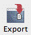
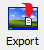
ExportingThere are several ways of exporting information from MoneyWorks. Virtually any report or list that you print can be exported to either an html or text file by
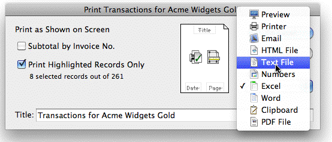
Clicking the Save As... button will display the standard File Creation dialog box, where you name the file and choose its type (tab delimited or html).
Transactions can be exported for use in another application or for importing into another MoneyWorks document. A copy of the transactions are exported—the original are not affected.
To export transactions:
setting the output to an HTML or Text file. In addition, the individual records themselves (transactions, accounts and so forth) can be
The Export Toolbar button - Windows
The Export Toolbar button - Mac
exported by use of the Export Selection command in the File menu (or by clicking the Export Toolbar button)—The resultant file will be a tab delimited text file which can be opened by most mainstream applications1.
You can also use the Copy command in the Edit menu to copy the highlighted records in the list. They can then be pasted into another application.
Whenever you are printing, whether it is a report from the Reports menu or just one of the lists on the screen, the Print Settings dialog box will be displayed. Set the Output to pop-up to HTML File or Text File as shown below. You can also export directly to Excel, Word or the clipboard.
The Export Transactions settings window is displayed.
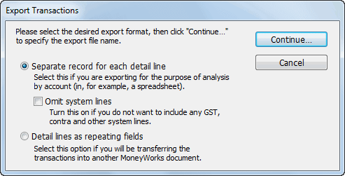
Separate record for each detail line Use this if you want to use the transactions for analysis based on account code or some other value associated with the detail lines of the transactions. This tells MoneyWorks to output each detail
line as a separate record. Transactions are exported with one record for each detail line in each transaction. Data from the transaction itself (that is not part of a detail line) is repeated in the export file for each detail line.
The first line of text contains the field names, separated by tabs.
Omit System Lines: If you do not want to exclude the system lines automatically added to every transaction by MoneyWorks, set the Omit System Lines option. System lines are added to handle GST, contra (bank, accounts receivable/payable), multi-currency and inventory.
Detail lines as repeating fields Use this to export each transaction as a single record, with the detail lines in a repeating field format compatible with the MoneyWorks Import Transactions facility (also compatible with FileMaker Pro repeating fields). The data is exported as tab delimited text, with the repeating detail line fields are separated by ASCII 29. The first line of text contains the field names, separated by tabs. Detail lines are exported as two distinct sets of fields (denoted in the table by the prefixes u and s). The detail lines whose field names are prefixed by u are user-entered detail lines that are visible in the transaction entry window. Detail lines designated by s are system detail lines that are added by MoneyWorks to balance the transaction. In the case of cash transactions, the system detail lines affect the bank and the appropriate GST control accounts. For invoices, the system line affects the appropriate accounts receivable or accounts payable account.
Click Continue
The standard Save File dialog box appears.
The highlighted records will be exported in the specified format.
Names, Products, Jobs etc can all be exported for use in another application or for importing into another MoneyWorks document. This takes a copy of the information and transfers it to a new file—the original records are not affected.
To export the information:
Open the appropriate list window
Highlight the records to export in the list
Choose File>Export... or click the Export Toolbar button
The standard Save File dialog box appears.
The highlighted records will be exported. The first line of the export will contain the field names.
You can export accounts, balances and budgets from MoneyWorks.
The Accounts list will be displayed.
The Export Account Details dialog box appears.
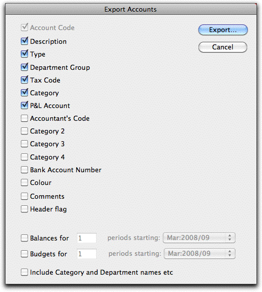
You can select what data for the accounts will be exported—the Account Code is always exported (you cannot deselect this item), but you can select what other account fields, balance or budget to export.
The data will be exported as a tab-separated text file—one row of data corresponding to a single account (or sub-ledger for departmentalised accounts). The first row will contain column headings.
Set this option if you are intending to re-import the accounts into another MoneyWorks document. When set, MoneyWorks will include department and category information in the export.
Click in the appropriate check box if you want to export budgets or balances. Enter the number of periods (columns) of data to export and set the pop-up menu to the first period to export.
Click the Export... button
A Save File dialog box allows you to name the file.
Note: If you are exporting the accounts for import into a new MoneyWorks file, it may be easier to use the Save a Clone as feature.
Importing is done either by using the appropriate File>Import command, or by pasting the data if it has been copied in a suitable format onto the clipboard.
You can import accounts, budgets, names, products, transactions and job information. The information can be sourced from other applications such as a word processors, spreadsheets, databases or even other accounting programs (provided they have an export capability). It can be simple text (csv or tab delimited), or xml.
MoneyWorks will always check the data being imported, and will discard any information that has errors. For most imports you have the option of rejecting the entire import file if any errors are found, or just the records that are in error (which are written to a new file so they can be identified and corrected).
You can import account information for your chart of accounts. This can be done either by importing the data from a text file, or by using the Paste command in the Edit menu if you have previously Copied the information onto the clipboard.
To import accounts:
The Import Accounts window will be displayed.
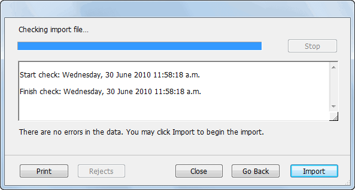
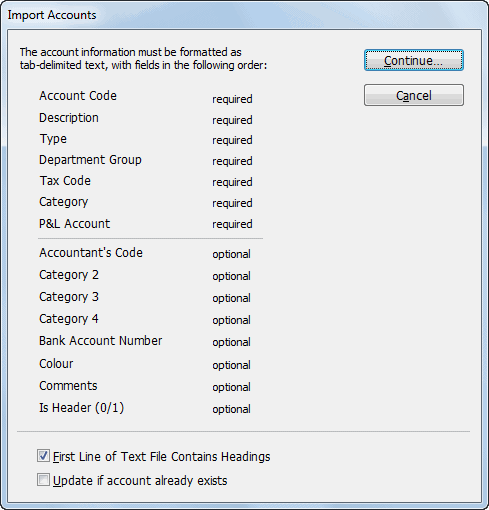
This gives information on the structure of the file that can be imported. SeeImporting Chart of Accounts for details of this.
When this is set any information in the first line is ignored.
If any errors are found in the file they will be listed here. You will need to correct these and repeat the import procedure.
The accounts will be imported and any necessary departments and categories created.
If Close is clicked no import is done.
The information required for importing is displayed in the table below. All items of information about the account must be supplied. These fields must appear in the order shown in the following table.
Field Description
If the account already exists in your system, it will be updated to reflect the information being imported. Only some fields can be updated.
Click Continue
Account Code
The code that identifies the account. If you wish MoneyWorks to departmentalise the account as it is imported, the whole line should be duplicated for each department, and the account codes should be suffixed by a hyphen and the department code (e.g. = "1000-XYZ= "). Accounts with a department code must have a department group code in the Department Group field. If the account code already exists, the entire line is ignored unless the Update if Account Already Exists option is set.
The Import Accounts window will close and be replaced by the standard file open dialog box.
Description The name of the account
Type The type code for the account. This must be one of:IN, SA, EX, CS, CA, CL, FA, TL SF for Income, Sales, Expense, Cost of Sales, Current Asset, Current Liability, Fixed Asset, Term Liability and Shareholders Funds respectively; or: BK, AR, AP, GR, GP, PL for the system account types Bank Account, Accounts Receivable, Accounts Payable, GST Received, GST Paid and Profit & Loss.
The import file checking window will be displayed.
Dept Group
The code of the department group if the account is to be departmentalised.
Tax Code The tax code for the account. This must be one of the codes already present in
the tax rates table. Category A category code. This can be a category that you have already created, or you
can have MoneyWorks create the new category as the accounts are imported.
When imported, MoneyWorks will create the department groups WAGES and PCENT. It will also create the departments JF, DP, AB, WD and GD. JF, DP and AB will be added to the group WAGES. WD and GD will be added to the group PCENT. The categories FEXP, AEXP and TINC will also be created. You will need to
P&L
Account
If the account is an income account or an expense account (it has = "IN= " or =
"EX= " in the Type field), you need to specify which P&L account the income/ expense account will be associated with. For accounts of other types, this field
type in the descriptions for these — see Departments.
must be empty.
... The remaining fields are optional, and will be imported if they exist in the file.
The position is important--if you want to import Category2 but not the Accountants Code, there needs to be an empty field where the Accountants code would be. You do not need to have the optional fields after the one you wish to import.
The P&L Account specified for a new Income, Sales, Cost of Sales, or Expense account must already be present in the chart of accounts. If, in your text file, you use a P&L account code that is to be created by the import process, the account definition must appear in the import file before it is used in the P&L Account field of an Income or Expense account. A sample text file would be something like:
| Account |
|
|
|
|
|
|
|---|---|---|---|---|---|---|
| 900 |
|
|
* | |||
| 100-JF |
|
|
|
E |
|
|
| 100-DP |
|
|
|
E |
|
|
| 100-AB |
|
|
|
E |
|
|
| 110 |
|
|
G |
|
|
|
| 120 |
|
|
G |
|
|
|
| 150-WD |
|
|
|
G |
|
|
| 150-GD |
|
|
|
G |
|
|
| 400 |
|
|
* | |||
|
|
|
In this example notice that the Profit and Loss account appears in the file before it is assigned to the expense and income codes 100, 110, 120 and 150. Notice also that the type codes used for the Profit and Loss account and the bank account are PL and BK respectively. After being imported, these accounts will appear in the accounts list with types SF and CA, since these are the general account types corresponding to those system account types.
The procedure for importing other files (names, transactions, products, etc.) is the same, except that the file structure and import options will differ. For QIF Bank Statement importing see Importing Bank Statements, and for importing taxes see Importing Tax Rates.
The File Open dialog box will be displayed
If you used the Import XML, the XML data will be imported directly — see XML Importing. Otherwise the Import Field Order window for the import file is displayed.
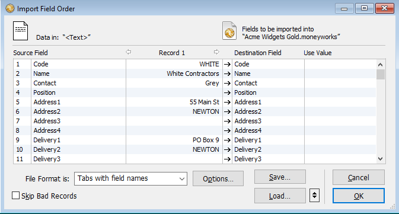
This shows a preview of the data in the file, allowing you to step through it, and match the data to the MoneyWorks fields.
Note that if the information is already on your clipboard (having been copied from a MoneyWorks document or another application), you can choose Edit>Paste to open the Import Field Order window.
The import file formats are described at Import.
For specific information on field definitions and import options see the appropriate section (transactions, payments on invoices, names, products, or job sheet items).
MoneyWorks will not import any data that does not pass its validation checks. How it handles errors is determined by the Skip Bad Records option:
If the option is off (the default), MoneyWorks first scans through the entire import file to check the data for validity. If there are problems with a record, an error message will appear in the scrolling list with the line number that the error occurred on. No records will be imported.
If the option is on, MoneyWorks will check each record individually. If it is valid, it is imported. If there is a problem it is not imported but is instead written to a text file “Rejected Import Records.txt”. You can subsequently correct the rejected records and re-import them.
Click the Options button to specify any import options
The options vary depending on the file being imported into. For example, when importing Products or Names, you might want to update existing records in MoneyWorks.
The Import Status window is displayed and the import/scan started. Any errors found are listed2.
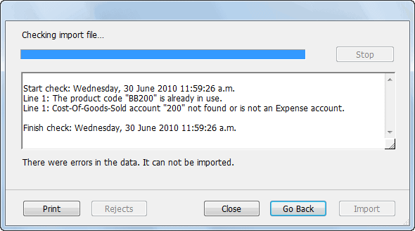
If you want to stop the import/scan, click the Stop button. Any records already imported will remain in MoneyWorks.
If there were no errors, and the Skip Bad Records option was not set, you will be asked if you want to import the records. Click Import to do the actual importing of the data.
If there are errors and the Skip Bad Records option was not set, none of the data will be imported. You must correct the errors and start again.
If there are errors and Skip Bad Records is set, any bad records are written to the reject file. Click the Rejects button to view them in a text editor. You should correct them, save them in a file with a different name, and re- import them
You can print the error list by clicking the Print button.
Clicking Back will close the progress window and return you to the import map configuration window.
Tip: If you have a lot of records to import, turning off the MoneyWorks preference Enable Rollback and Crash Recovery can make importing up to ten times as fast. Remember to turn the option back on afterwards.
The import data may be in one of four different text file formats:
Format Details
Tab- separated text
Tab- separated text with
This format is common to most applications. Records have a fixed number of variable-length fields with each field separated by a TAB character (ASCII 9), and each record terminated by a Carriage Return character (ASCII 13) or CR/ LF.
This format is the same as Tab-separated text except that the first record in the file contains not data, but the names of the fields present in the file. If you are using this format when importing accounts or budgets, make sure
field names you set the Ignore First Line option in the File Open dialog.
The fields within MoneyWorks into which you can import
Comma- separated values (CSV)
This is a text format in which the fields begin and end with a quote character (ASCII 34), and are separated by a comma (ASCII 44). Records are terminated by a carriage return or CR/LF.
e.g. "Field One","2","Field 3" .
This is not supported when importing accounts or budgets.
data are listed in the Destination column. The order of these fields can be changed by dragging them up or down the list. The mouse cursor will change shape to indicate that the field can be dragged. When you drag a field and
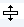
Field dragging pointerMerge format (Comma- separated with field names)
Merge format is the same as CSV (above) except that the first record contains not data, but the names of the fields present in the file (and this first record is comma-separated without quotes around the field names). This is not supported when importing accounts or budgets.
drop it in a new location (opposite the data that you want to be imported into it), it will swap places with the field name that was in that position.
If you are importing transactions from FileMaker Pro, MoneyWorks supports the FileMaker Pro repeating field export format. Each FileMaker repeating field can be mapped onto a field in the transaction details.
When importing transactions, names, products and job sheet information, MoneyWorks allows you to specify which fields will be imported and in what order. This is done by means of the Import Field Order dialog box.
The data is mapped from the Source to the Destination
column wherever there is an arrow in the central column. To activate a field for importing, click on the dotted line in the central column. An arrow appears, indicating that data will be imported into the field. If you do not want to import data into a particular field, click on the arrow to turn it off. A dotted line is displayed in place of the arrow to indicate that no data will be imported into the field.
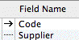
Data will be imported into the Code field, but not the Supplier field.
To specify the field order:
1. Choose the correct file format from the File Format is pop-up menu
On the left side of the Field Order dialog box is displayed the data from the text file that you chose.The first column contains the field number. You can use this to calculate values derived from the raw data as part of the import.
If the format of the text file is Merge File or Tab Separated with Field Names, then the field names will appear in the Source Field column.
The Record x column displays the actual record data from the import file. If this data does not appear correct—everything is on the first line for example—then you may have selected the wrong file format. You can scan through the data by clicking on the left and right pointing arrows at the top of the Record column. The Record number will change as you scan through the data. Scanning the data in this way will help you to identify the fields if the File Format does not include field names.
Fields into which data is not being imported can be filled with calculated data. This is shown in the Use Value column—see Using Calculations in Imports.
Click Options... to change the importing options
The Options dialog box appears. The options available depend on the file that you are importing into.
MoneyWorks will remember the last used field order and option settings, so the next time you import the field order will default to that previously used.
However if you will be importing data from several sources, you may want to save the import setup for later use. The map can be reloaded in subsequent imports by using the Load button.
The standard file save dialog box is displayed. You should save the map into the Import Maps folder in your MoneyWorks Custom Plug-ins folder.
Load... to load it
The Import Progress dialog box appears.
If no errors are found, you can import the data as described previously.
MoneyWorks allows you to massage the data being imported. This means that if the data is incomplete, or doesn’t quite have the right fields, it might be possible to fix this as part of the import process.
To specify a calculation:
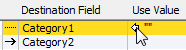
If there is, click on it to turn it off.
Double-click on the
Use Value: If you have a single, known value that you want to apply to all imported records, specify it here;
Work it Out for Me: Set this if you want MoneyWorks to provide a value. This is not always available—see Working it Out.
Calculate Value: Set this if you want to calculate a value for the field. This is discussed further below.
Any calculations/values supplied here are normally only applied to new records being imported.
Records are only updated if the Update if Exists import option is set (set using the Options button).
Click OK
The Use Value dialog box opens.
value to open the
Use Value window.
The Use Value window will close, and your value or calculation will be shown in the Value column of the Import Field Order window.
You can only do this if no data is being directly imported (i.e. the centre column has no arrow in it).
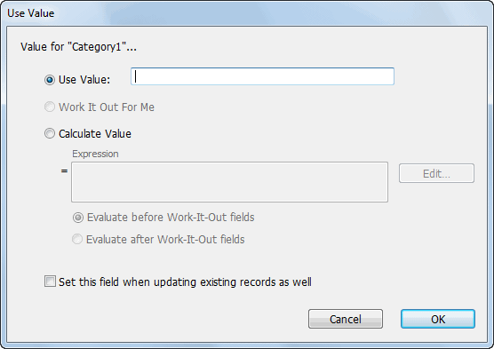
Calculations can be based on the data on the record being imported, as well as MoneyWorks functions and global variables. The calculation is entered as a normal MoneyWorks expression either direct into the Expression field, or into the Calculation window that opens when you click the Edit button. For information on expressions see Calculations and things.
Note: The fields being imported can be used in an expression by their field name. You can also refer to data in the import file that is not being directly imported by its field number (as shown in the first column). The number is preceded by an underscore, so “_3” would refer to field 3 of the import. For example, if field 4 contains “Money makes the world go around”
Left(_4, 3)
"Mon", the left 3 characters of field 4
left(_4, positionintext(_4, " ")-1)
"Money", the first word of field 4
If you use the * / - operators, MoneyWorks will attempt to coerce the values to numeric. The + operator is for a string concatenation; if you want addition you need to coerce the fields to number by using TextToNum. For example if field 3 contains “10” and field 4 contains “5”
_3*_4 = 50 (multiplication)
_3 + _4 = 105 (string concatenation) TextToNum(_3) + TextToNum(_4) = 15 (Addition)